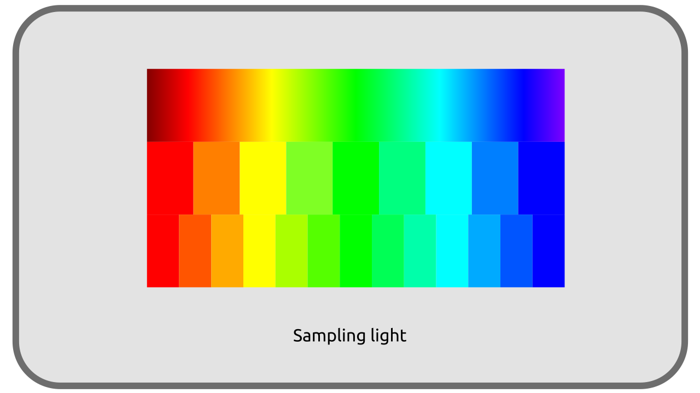

I.G - From real life to digital¶
Having now a way to objectively represent the colors we see, to locate them on a reference diagram, we can ask ourselves the question of how to digitize, store, then restore these colors via a binary system.
G.1 - Digitization and storage: converting to binary¶
The difficulty is to represent an analog and continuous world1 in a fundamentally discontinuous and digital system, with discrete values.

In binary numerics, any value, whether it is a number or a color, must be stored in a sequence of zeros and ones, which are called bits*2. It is therefore impossible to represent the whole set of real numbers in numerical form, and we have to quantify, to cut the infinite number of colors we can see into a finite number of numerical values. This is sampling.
The more we cut these values into small quanta, small samples, small bricks, the more we gain in precision and the more we can approach a faithful representation of reality; but the question of storage and the necessary space arises.
Let’s do a simple calculation: let’s take a digital image divided into a “grid” of 1920 pixels in width and 1080 pixels in height, the resolution of a standard digital video (in 2020). This image therefore contains 1920 x 1080 = 2,073,600 pixels.
In its most common form, a pixel is represented by three intensity values for three primary colors. Each of these three values is usually stored in at least 8 bits. Each pixel therefore needs 3 x 8 = 24 bits* or 3 bytes* to be stored (a byte being formed of 8 bits). Note that this choice of using one byte (8 bits) per primary color allows “only” 256 values per primary (2^8), that is to say a total of about 65 million (256^3) different color shades. This may seem like a lot, but it is still far from the shades perceived by the human eye, and the number of shades used in movies.
So our image needs 2,073,600 pixels x 3 bytes = 6,220,800 bytes to be stored. 6 MB for a single image, which means at least 6 x 24 = 144 MB for one second of video, or 144 x 60 = 8,640 MB for one minute, more than 8 GB3!
1920 px x 1080 px x 3 primaries x 8 bits x 24 fps x 60 s ≈ 64 Gb/min ≈ 8 Gb/min
This size represents a data rate of about 1.2 Gbps. As an example, a movie on a Blu-Ray disc is encoded with a data rate of about 24 Mbps, which means that this size must be divided by about 50…
G.2 - The color spaces¶
It is thus essential to find methods making it possible to reduce the place occupied by all this information; it is there that the various choices of colorimetric spaces and methods of compression and sampling of the associated data come into play.
This problem appeared long before the advent of digital technology: analog data flows, via electrical signals, also have a limited transfer capacity (bandwidth), and even much more limited than digital information transmission using the same copper cables, which explains the format limitations imposed in the early days of video, not to mention the storage problems.
The way of storing the sampled (digitized) luminous information therefore depends on the material used for the capture (the camera) or the production (in synthesis), as well as on the use that will be made of it (only what can be reproduced is stored), and influences the quantity of data to be stored.
The choice of how to store the data will also define which data will be lost, since it is impossible to remain faithful to the real thing, or which types of lights and data will be prioritized (intensity or hue, darkness or highlights…).
The system of storage of the data of light is what we call the color space.
Sources & References
-
With the advent of quantum physics, we now know that the world is in fact also discontinuous and divided into quanta of energy and matter; simply these discrete values are so small that they will always be imperceptible. This argument is sometimes used to try to demonstrate that we are actually living in a digital simulation (of extreme precision), but that is another subject… ↩
-
And 8 bits represent 1 byte, the unit most commonly used in storage. ↩
-
That’s about 25% of the capacity of a standard Blu-Ray… ↩